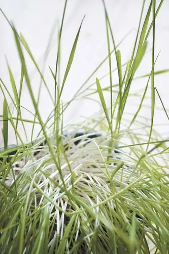

[Originally printed in The Forum newspaper Saturday, April 27; reprinted with permission.]
Living Faith:
Forgotten grass seeds tell of tenacity
By Roxane B. Salonen, The Forum

My friend Katie welcomes springtime by placing grass seeds and soil in clay pots, then delighting as the seeds grow and turn into plush circles of green stems.
For the past years observing this tradition, I’ve been struck by how simple a thing as green grass can bring such joy.
Just before Easter this year, Katie prepared a vessel for each in our group of friends, instructing us to put them in a dark place for a few days to let the seeds germinate. Timing this well would produce a plethora of green sprouts come Easter morning, she promised.
Once home, I opened the door of a low-lying storage space large enough to hold a handful of boxes and placed the container inside.
We need green more than ever this year, I thought.
But Easter came and went, and in all of the excitement of preparation and participation, I forgot about the life-giving gift in the closet.
The next time I visited Katie, her pot of luscious green popped out, and my heart sank as I remembered. What had I done by leaving the grass seeds in that light-less space? Had they surrendered and died?
That afternoon I approached the tiny closet where I’d placed the grass seeds with dread. Bending down, I immediately noticed signs of life – yellow tendrils reaching tenaciously through the crack between the door and wall.
Inside, long stems leaned toward me. Though glad to see them, I frowned at noticing their pale colors.
Faintly, I heard the grasping grass whisper, “We could not, would not give up.”
I placed the container on the mantle of the electric fireplace that keeps my toes warm in winter then thanked the lot for not relenting, despite my deficiency.
As the days passed, yellow turned to green; not the hue that could have been but bright enough to prove not all had been lost.
 |
What started from seeds that were forgotten in a storage space has grown into healthy grass. (Roxane B. Salonen / SheSays contributor) |
{kind=link}
Though I’m happy to have them to remind me of a springtime promised, the reaching stems haunt me, too, reminding me of a movie based on a short story by Ray Bradbury, “All Summer in a Day.”
The main character, a young girl, lives on Venus, which the sun visits only once in a great while. On the day of its appearance, the first in nine years, she becomes locked in a closet and misses the big event, while her classmates frolic in the sunshine and flowers.
How desperate we are for what the sun offers: warmth, illumination, hope.
Having been on the receiving end of sunshine, I can’t help but think a life without faith would be like being stuck in a dark closet, sensing the sun but not being able to access it.
Those in dark spaces may need us to help open the doors, to let in the light. We in turn need this from others during our own times of darkness.
We’ve been warned a flood is certain to come our way soon here in the Red River Valley. As during past flood events, I expect to see many neighbors working hard to open doors leading to darkened closets for others.
And I’m hopeful that on the other side of what we’re about to go through, the sun will shine more vibrantly than ever.
Roxane B. Salonen is a freelance writer who lives in Fargo with her husband and five children. If you have a story of faith to share with her, email roxanebsalonen@gmail.com.